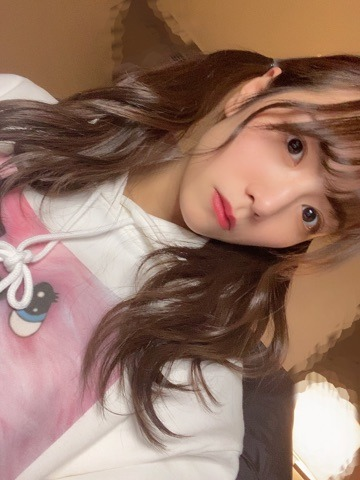

2021/0408Thu在った証拠
こんばんは
北野日奈子です！
2021年が始まってすでに3ヶ月が過ぎていますね
また3ヶ月が経てば私のお誕生日月です
そうなると25歳になります
正真正銘どこからどうみても大人なわけです
それなのに好きな食べ物は大人っぽくなっていかないんだよね
まず大人が何が好きなのか分からないけど
もう少し大人の意見を収集して分析していかないと
大人になるには勉強が必要ですね

美味しい温かいそばを食べたい！
美味しいお蕎麦を食べてお腹の底から温めたい！
もうすぐ乃木恋の彼氏イベントですね
久しぶりに皆さんと生で対面するから
緊張して全然目を合わせなかったらごめんなさい笑
3月28日
無事に二期生ライブを終えられました！
未央奈もとても綺麗で可愛くて
未央奈をずっと近くで見てきた私としては
心からの感謝とお疲れさまという感情で
いっぱいになりました！
寂しいとかで泣いていたわけではないんだ～
だってこれからもずっと仲良しだと思うし！
二期生会で集まるだろうしね！
いつも一緒にいた5人でも集まりそうだし！
永遠の別れではないから
普段の私で毎日を送れています！
未央奈も新しい道で頑張っていることだし
私も乃木坂でもう少しがんばるぞ～
二期生8周年おめでとう！ありがとう！
また書きます！
2021/04/08 16:30


コメント(554)
最高でした
ブログ更新ありがとう！
2期生ライブお疲れ様でした！
めっちゃかっこいいし、可愛かった！
これからも頑張って！
ばいちゃ！
これからも大好きな乃木坂、大好きな仲間と頑張って！
日奈子ちゃん元気なことが一番！！
2期生ライブ最高だったよ！！
これからも応援しつづけます！！
がんばれ！
てーらより！
もう少しとか言わないで、 ずっと日奈子ちゃんを応援してたい！
ブログ更新ありがとう
今日はモバメもありがとう
2期ラお疲れ様でした！すごく良かった。工事中も見たよ！もっと見たかったくらい面白かった笑
ブログ更新ありがとう( ᵒ̴̶̷᷄꒳ᵒ̴̶̷᷅ )
もう25歳、周りが結婚ラッシュでもうそんなことを考えなくてはいけない歳なんだって少し焦っている今日この頃です！この間まで高校生だったのに〜！って気分（笑）
2期生ライブお疲れ様でした。
無事に未央奈ちゃんが卒業する前に開催できたこと
本当によかった！堀北はわたしがいちばん好きなコンビでもあったのでこれからもずっと仲良しでいて欲しいな！
日奈子に早く会いたいです( ߹꒳߹ )
ブログ更新ありがとう！
あと3ヶ月で25歳！また１つ大人になるんですね！
美味しいお蕎麦！ぜひ食べてください！
2期生ライブ、お疲れ様でした！
最高でしたね！
2期生をこれからも、もっと応援したくなりました！
改めて8周年おめでとう！
それでは！
いつもありがとう！
これからも応援してます！
未央奈はこの曲好きだったよね確か
粋なことするね〜日奈子ちゃんは
2期生8歳おめでとう！
日奈子ちゃんの活躍をこれからも片時も目を離さず見守ってるよ！
本当に感動した！
日常前のきいちゃんのスピーチしっかり伝わりましたよ。
改めて真っ直ぐきいちゃんの事を応援したいと思いました。
君に贈る花がないも素敵だった。
サンエトはずっと僕の青春です！
これからもきいちゃんの事見守ってるよ〜！
本当に本当に素敵なライブを有難う！
僕は最近千葉から福岡に引っ越し、初めての一人暮らしが始まってから少し自分が大人になれた気がしています笑
二期生ライブ、お疲れ様でした。もちろん未央奈の卒業は寂しかったけども、二期生の暖かさに感動して泣きじゃくっていました笑
寂しい！って気持ちよりも暖かい！って気持ちのほうが勝る、すごく前向きなライブでした。本当にありがとう！！
あと少し。
堀北は永遠。
大人って難しいよね笑
あるところでは大人と言われ、まだあるところでは子供と言われる、むずかしい！！！！！
またコメント書きます！！
にゃん(ふみー！)より
#hinakomail
28とかになるともうすぐ30かぁと思うんですけど、なんだか不思議な年齢っていう印象。
とある声優さんがそば打ちを趣味にしてるんだとか
自分は3年前飲んだ蕎麦湯がほんとに美味しくて蕎麦湯の美味しいお蕎麦屋さんに行きたいなとしばしば思ってます。
この先みんな卒業しちゃっても、2期生の事をずっと好きでいる自信があります。それくらい2期ちゃんが好きです。2期生を応援させてくれてありがとう、もう少し、乃木坂2期生のひなこちゃんを応援できることを嬉しく思いながら、これからもずっと応援してます⊂( *･ω･ )⊃
ブログ更新してくれてありがと！
ねー、今年始まってから3ヶ月経つとか早すぎん？
きいちゃんの誕生日もあと3ヶ月後かー。
あっという間に7月になりそうよな。
無理に大人になろうとしなくてもいいんじゃない？
お父さんやお母さんに聞いてみたら…？
あとは1期生の先輩方やまいちゅんとかに聞いてみるとか！
2期生ライブおつでした！
リピート配信で見れたんだけど、冒頭のアナスターシャからもう泣きじゃくってた…笑
未央奈とお仕事とか一緒に出来るといいね…！
2期生ライブ最高だったよ！アフター配信も楽しそうにしてたのがめっちゃ良かったよ！
新生活が始まったから、俺は大学生活がスタートしたけど、日奈子ちゃんの周りでも変わったことあったかな？
またミーグリとかで話せたら良いな～
体調には気をつけてね！
ほんとに2期生は最強だと思います。
苦労を一緒に乗り越え2期生にしかない強さがありますよね！
これからも2期生を応援していきます！！
めちゃくちゃ感動しました。
アナスターシャから始まって、懐かしの楽曲や2期生曲。
特に君に贈る花がないをやってくれたのはサンエト好きとして嬉しかったし最高だったよ〜
まいちゅんにも感謝です！笑
改めて2期生8周年おめでとう！
2期生ライブ楽しかったよ！
もう、25歳なんだね。24歳楽しんでね！
まずは、2期生ライブお疲れ様でした！配信という形ではあったけど、本当に楽しめたし、2期生の良さが存分に伝わってくる素敵なライブだったよ^ ^
アナスターシャから始まりアナスターシャで終わるという形も良いなって思うし、2期生の日常も楽しそうだったな〜、ゴルゴンゾーラも凄く仲良いな〜って笑
全曲について感想書くと長すぎちゃうので飛んで、嫉妬の権利とかね、2期生にとって思い出深い曲って神宮での期別ライブの時も言ってたと思います。その後に今誰やるところね、カッコいいし感動したな〜。
で、ゆっくりと咲く花は本当に良い曲だね、これまでで一番好きなゆっくりと咲く花って感じがしたな〜。
アンコールでの一言は、うん、笑
これからも大大大大大親友でいてください笑
未央奈もそうだけど、2期生みんな輝いてて、本当に2期生ライブが実現できて良かったです！嬉しいです！
アフター配信のジェスチャークイズも楽しかったよ〜盛り上げ上手というか、盛り上がり上手というか、きいちゃん可愛かったです 8周年おめでとう
乃木恋彼氏イベントは楽しんでください(^^)
久しぶりに対面は緊張するよな〜、実はみり愛ちゃんの方のイベントに参加してきたのですが、その、緊張しました笑
でも、久しぶりに生で動いてる姿が近くで見れて本当に嬉しかったので、参加できて良かったです笑
宇宙兄弟のお二人が好きでして、今回はみり愛だったけど、次はきいちゃんの方参加したいと思っております。頑張ります。
ミーグリとかでもきいちゃんと話せる日を楽しみにしていますね(^^)
きいちゃん楽しんで〜
涼
ブログありがとう！
2期生ライブ感動した！
まだ握手会とかで直接きーちゃんに会ったことないから会いたい！
これからも応援してます！きーちゃんらしく元気で頑張ってね！
大好き！
きいちゃんはもう既に素敵な大人の女性ですよ
もずくもドーナツも駄菓子もまだ好き？笑
私も20歳になったのに全然大人になれた気がしないから日奈子ちゃんと同じように勉強しなきゃ！（笑）
2期生ライブの感想も含めて、昨日ファンレター送ったよ！いつ届くかな〜？？いっぱい愛詰め込んだ♡
9年目も日奈子ちゃん、2期ちゃんが幸せでありますように
この3ヶ月、未央奈さんの卒業ライブやラジオなど色々な活動がありましたが、どの場面でもきいちゃんはきいちゃんらしくて僕は「大人」や「子供」というのより「きいちゃん」という新しいジャンル(？)があると思うからこのままで全然良いし、みんなそう思ってると思います！
永遠の別れではない！そうだよね！
これからもそれぞれの道で堀ちゃん含む卒業してしていったメンバー、そして2期生が活躍してくれると願ってます！！
きいちゃん大好き！！
まだこんにちはかな？笑
ブログ更新ありがとう！
二期生ライブお疲れ様でした！
乃木坂46のファンになって
乃木坂46二期生を大好きになって
二期生ライブを開催することは
僕の中でも一つの夢で
正直二期生ライブが叶ったから
後悔なくファンを辞められるかななんて
思ったりもしてたけど
みんなの悔しい思いや辛い言葉を聞いたら
僕は僕の大好きな二期生が
旅立つ日までこれからもずっと
見守っていきたいと思いました。
二期生も半分の7人になっちゃったけど
これからもそれぞれ道で
鮮やかなマーブル描いてほしい。
乃木坂46二期生は最高で最強！！
ずっとずっと大切で大好きな存在です。
8周年おめでとう。いつもありがとう。
温かい蕎麦も立派な大人の食べ物だと思うよっ。
例えば、昼間の蕎麦屋で蕎麦をつまみに日本酒飲む。
とかね。
大人ですが子供の頃から好きなカレーは今になっても好物なのです。まだ少しは2期生が活躍する姿見たいな、ファンのエゴですけど1日でも長くひなこちゃんが乃木坂としての活動が楽しめますように、応援してます！！
お手頃な内容のブログでもいいから、
更新されると嬉しいです。
これからもきいちゃんのペースでやってください。
楽しみに待ってるから！
ミーグリきぃちゃん体調不良で流れたけど、また元気なきぃちゃんに会えるの楽しみにしてるよ
いいライブでした。アナスタが1回目と2回目で曲として全然違う表情を見られたのが印象的でした。
早くライブ生で観たいなー
日奈子ちゃんはずっと可愛いままでいいよ！大人にならないでー笑
ほんとにほんとにだいすき。二期生がだいすき。
コロナに負けず、一緒にお仕事頑張ろうね。
コメントする